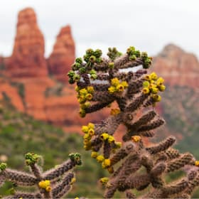

Фото и видео из городка Седона.
Добро пожаловать в Седону.
Фото и видео
Не можете решиться на путешествие из-за курса? Фотографии помогут вам забыть о политике и экономике.

неродные просторы
 местная растительность

дорога на север
мост дьявола
Все еще сомневаетесь?
Смотрите видеопрезентацию и скорее за билетами, пока они не подорожали в очередной раз!